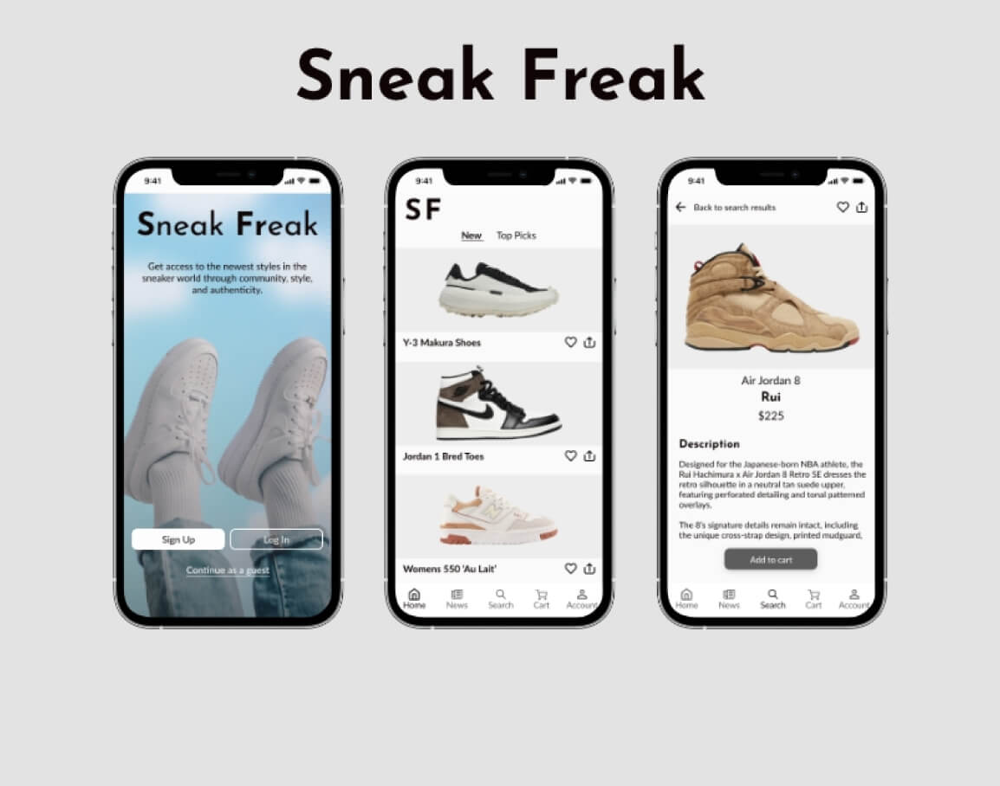
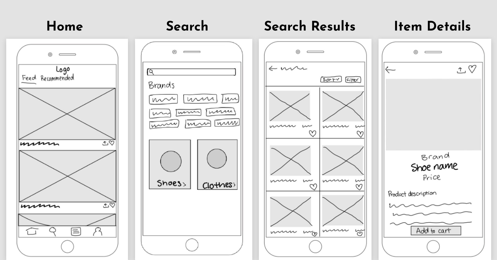
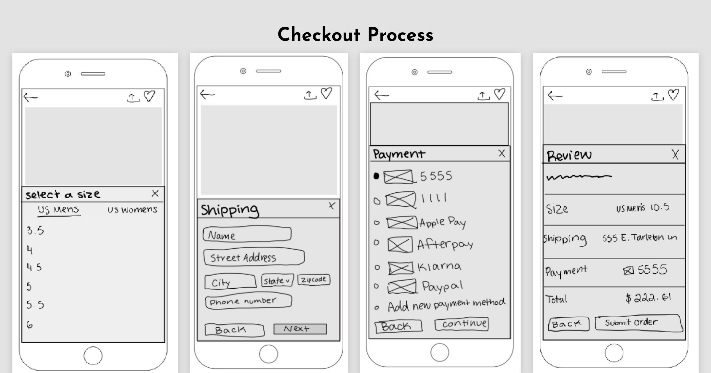
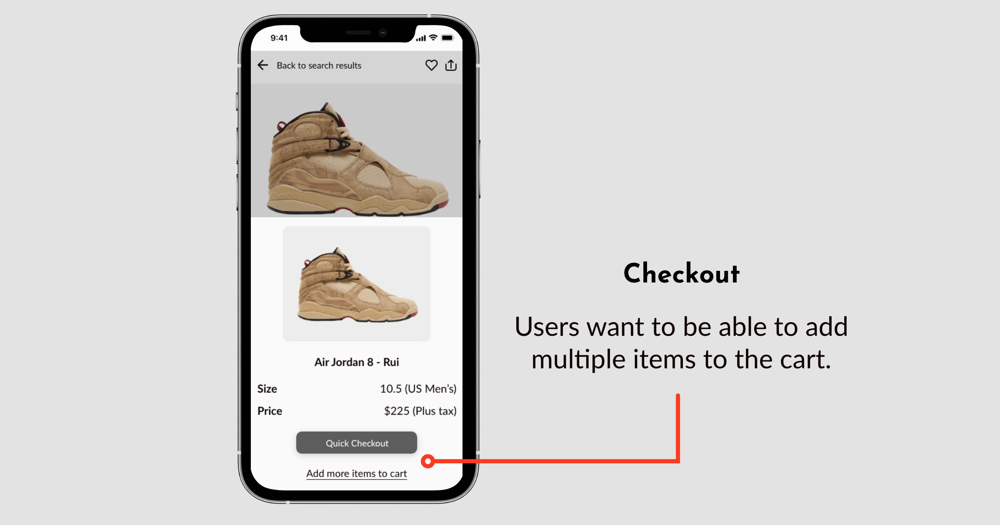
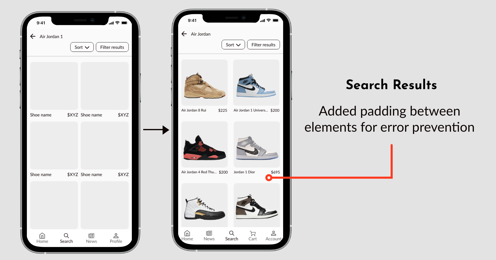
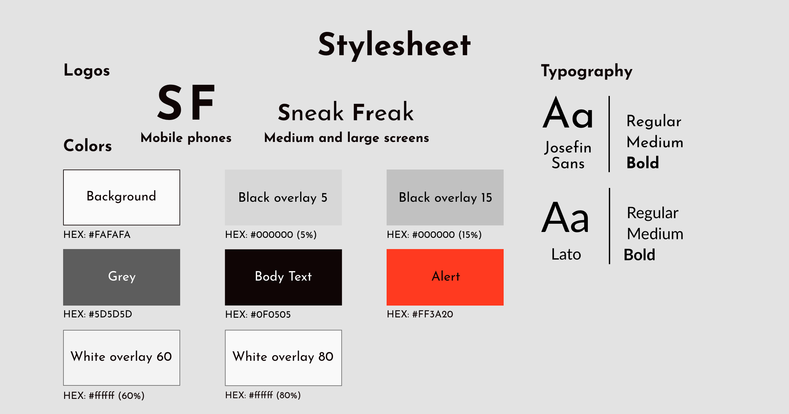

Sneak Freak
The online marketplace for sneaker fans to buy new shoes while staying up to date on the latest releases and sneaker news.
Role: Sole UI/UX and Visual Designer
Context
Over the past several decades, street footwear has seen a rise in popularity in the fashion community. During that time, it has become increasingly difficult for people to gain access to the newest, hottest sneakers during their releases. Sneaker fanatics everywhere deserve access to the fashion they love and want in a likeminded community.
Problem
The problem for this project comes from the lack of access to the newest and most wanted items in the street footwear community. There are millions of people who want items in the streetwear world, but many saturated communities, life schedules, and income leave these people empty handed. For the popularity of these items, it should not be limited to the few people able to access by chance.
Solution
Sneak Freak is an online marketplace for sneaker fans to buy new and certified used shoes while staying up to date on the latest releases and sneaker news from top brands. With Sneak Freak, long are the days of missing the newest sneakers; users have access to the inventory wherever they have access to the internet at any time. Our mission is to provide access to the newest styles in the sneaker world through community, style, and authenticity.
Competitive Analysis
I conducted a competitive analysis in order to understand the current market for sneaker sales. Doing this analysis allowed me to identify what works with other brands and pain points users face.
SNKRS
The SNKRS App is a branch of Nike, inc. for the releases of highly coveted new sneakers. With the SNKRS App, users can get notified when their favorite shoes drop, see behind-the-scene stories, enter SNKRS Drawings, reserve select sneakers with SNKRS Pass, and keep an eye on the calendar to see what’s releasing next.
GOAT
GOAT allows users to discover exclusive drops, new releases, vintage finds and archival styles. They’re able to shop sneakers, apparel and accessories, get notifications on price drops, make offers on most-wanted styles, try-on coveted sneaker styles with AR, and access exclusive drops and collections.
Personas
Cynn is currently a full-time college that works part-time to help build her closet. She loves wearing streetwear, especially sneakers. She likes to make larger purchases and use payment plans. She also has smaller feet, so she wants to make sure her size is available before she creates a profile.
Justin works full time and some days that includes the weekends. He’s an avid Air Jordan fan, being that him and his friends grew up sharing any new info they learned about them growing up. He’s looking to add to his collection of sneakers and would like recommendations based on what he currently likes.
User Flow
Once I decided on the tasks that users would be able do, I created the flow users would take to complete tasks.
- Place multiple items in a shopping cart
- See recommended products
- Access inventory without having to register
- Have a variety of payment options
Wireframes
The user flow guided me in creating lo-fi wireframes. By first making the lo-fi wireframes, I could quickly and efficiently adjust my designs early on.
 Iteration
Users were tasked with browsing and buying from the marketplace before becoming creating an account. Their task included searching for and purchasing a pair of brand new sneakers.
 Stylesheet
The style goal for this app is to be simple, sleek, and modern, allowing the focus to be on the items sold.
